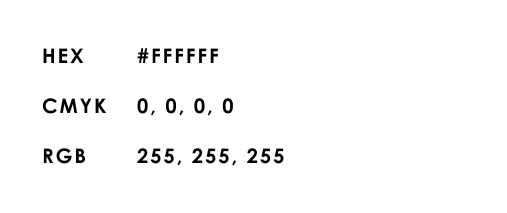
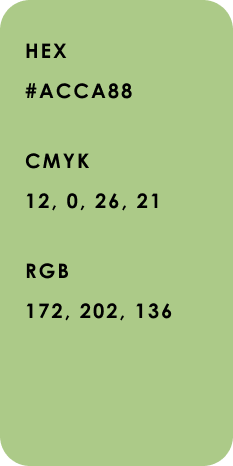
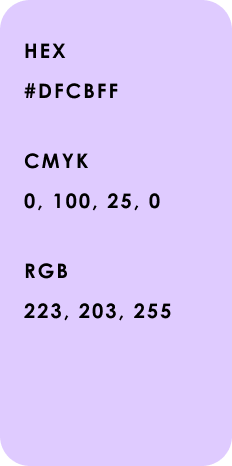
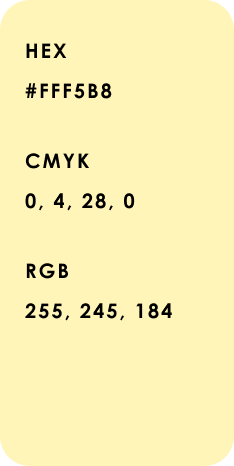
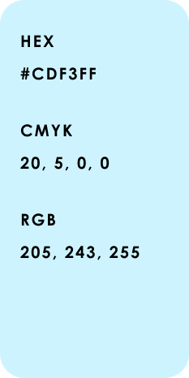

Выбранные цвета (голубой, зелёный, фиолетовый, бежево-жёлтый) соответствуют классическим ассоциациям, используемым в типологии MBTI, однако были сознательно смягчены до пастельных оттенков. Это создаёт более спокойную, уютную и психологически комфортную атмосферу.




